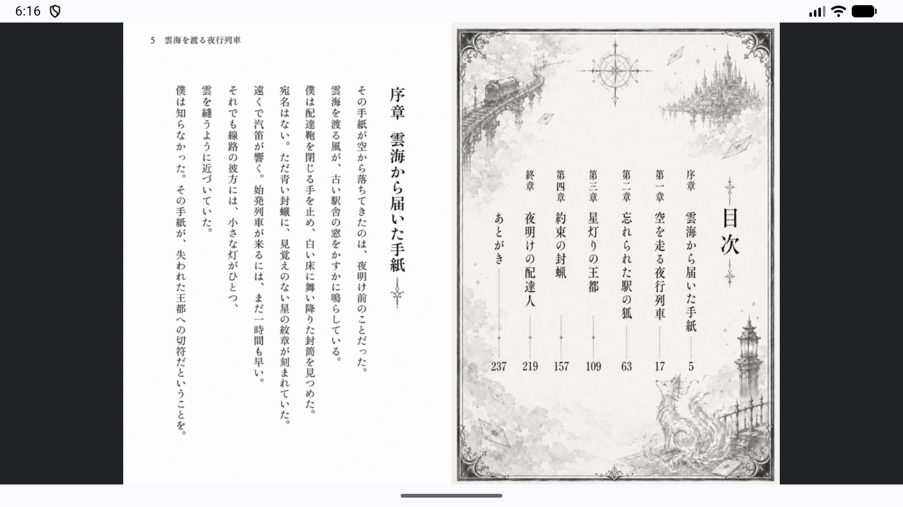
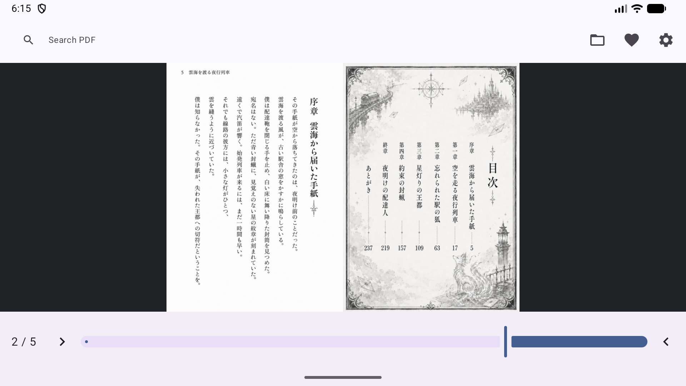
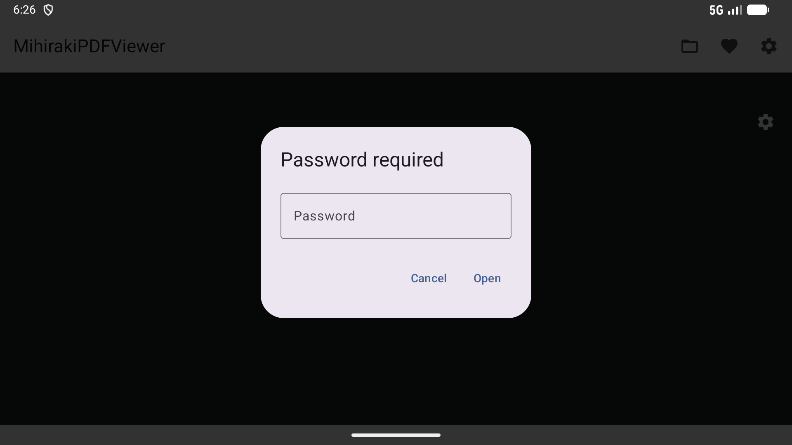
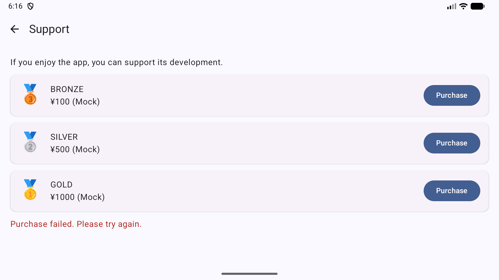
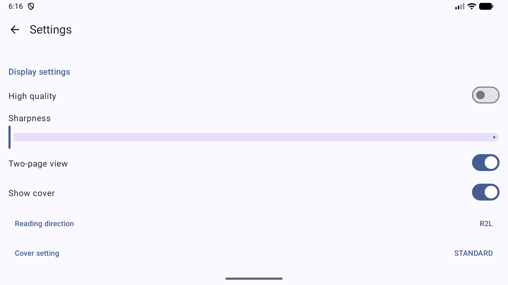

Isang modernong PDF viewer na na-optimize para sa two-page spreads at R2L reading sa Android
Tingnan ang dalawang pahina nang magkatabi. Perpekto para sa manga at art book layout.
Buong suporta para sa right-to-left reading order, kabilang ang mga inverted slider at intuitive swipe gestures.
Awtomatikong nakikita ang layout ng pahina at direksyon ng pagbabasa mula sa metadata ng PDF para sa zero-config na karanasan.
Mabilis na paghahanap ng text na may tumpak na hit highlighting (dilaw na background at pulang border) sa mga dokumento.





MihirakiPDFViewer ay dinisenyo na privacy ang nasa core nito.
*Paalala: Ang koneksyon sa internet ay ginagamit lamang kapag tahasang nagbubukas ng mga file mula sa mga cloud storage service tulad ng Google Drive.
Libre at Walang Ad
Ang app ay ganap na libreng gamitin. Ang lahat ng mga pangunahing tampok, tulad ng pagtingin sa PDF, spreads, at paghahanap, ay magagamit nang walang anumang mga paghihigpit anuman ang pagbili.
*Ang mga opsyonal na in-app tip ay magagamit para suportahan ang developer. Ang mga supporter ay makakakita ng espesyal na commemorative badge sa Settings screen.